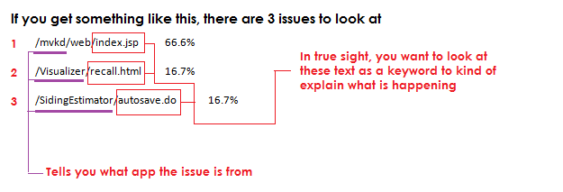
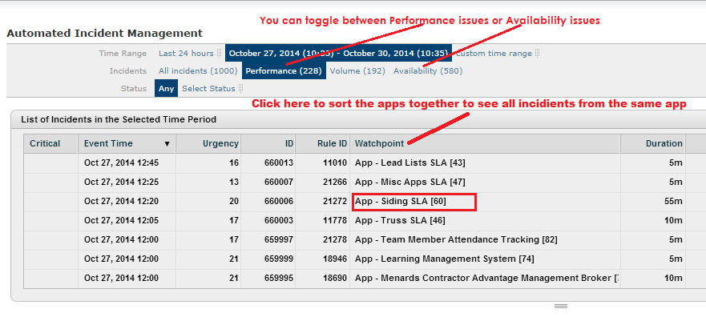
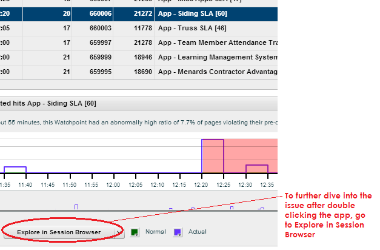
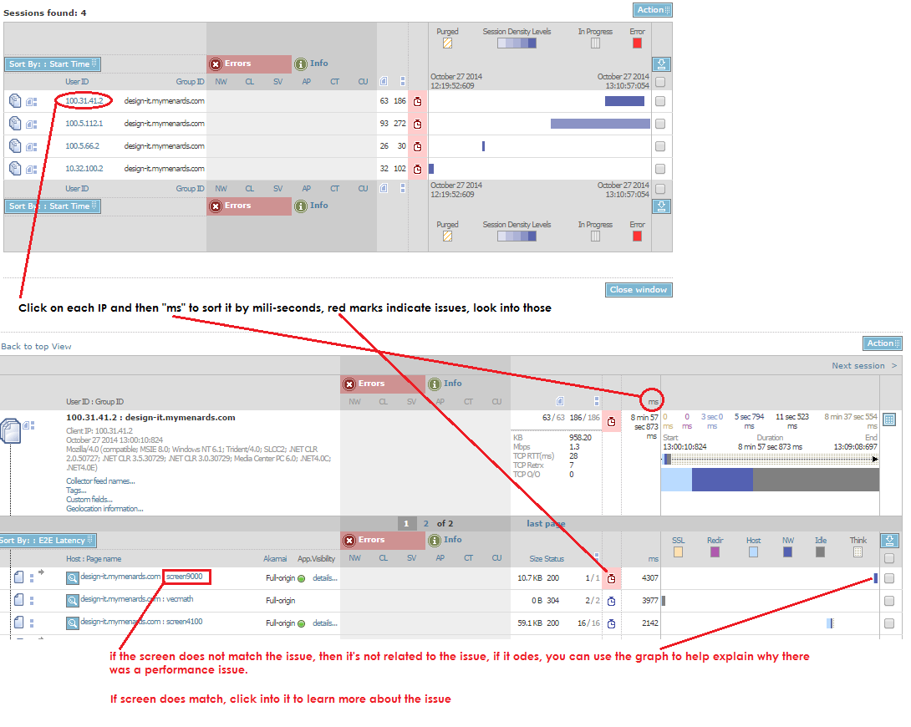
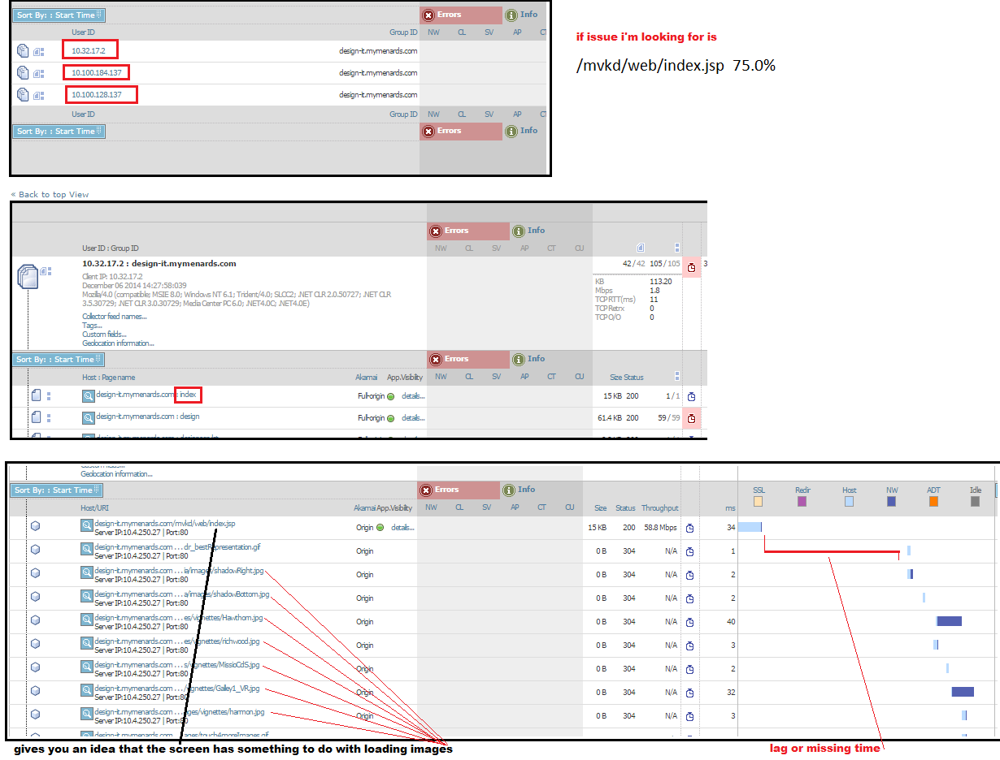

SLA
Each week (Usually Wednesday) we get an EAM ticket that shows where things slowed down in our apps. We have to look into these EAM and then give an explanation to each issues. There is a cheat sheet we can use to match up the problems constantly updated by a previous SLA person. If there is no match up in the cheat sheet, we have to investigate and give a proper explanation. We can use microsoft word or some text software to save and archive our report in.
The cheat sheet could be updated and can be found here F/Designit/SLA/SLA List.docx
Using Dynatrace
If when True Sight doesn't work, dynatace can help find more detail info of where the issue is coming from. For example, a siding Screen1601.do was nowhere to be found using true sight (the method below). But dynatrace was able to find the issue.
To use Dynatrace, you have to have the software installed on your machine first
Instructions for SLA in EAM - using True Sight
- Open EAM using internet explorer > menards portal > EAM > Login.
- Filter > Assigned To : DESIGN-IT > filter
- Look for EAM that has the name: ISINF-COST
- Go through each EAM by double clicking on them
Per EAM
- assign the ticket to you > Change assigned-to to your name (have to search by your username not your full name) > save
- Read the ticket comments > copy & paste report to a new word document > save word doc > fileName = ticket number
- For each report, you want to provide a reasoning or resolution, sometimes even creating a MCR to fix it.
Investigating each issue
- After creating word doc for each ticket, there may be multiple issues per ticket.

- You will not be able to tell when these issues occur by just looking at the percentage, you'll have to dig deeper into them using True Sight
- If you see an issue you are familiar with there may be already a MCR or resolution for it, check the cheat sheet
True Sight
- To further look into a particular issue, you can use True Sight
- True Sight
- Login > Incidents > filter 3-4 days ago to current > performance > any
- If you are looking for an issue in siding, search for siding > double click



- What you want to look for in true sight is find the matching error
- /mvkd/web/index.jsp 75% is the SLA issue
- In truesight when you dive into the session, under each IP, you want to look for index.jsp
- If there is a match, it'll let you know more details on it
- Click on the match, and it will take you into the details
- Everything following it will give you an idea of the issue
- 
Closing the EAM
- For incidents you can't resolve, put "Can't find trances of these incidents"
- For incidents you do find, list the resolution underneath the SLA issue
- Once all done copy & paste back the report into the EAM resolve comment box
- If text is too large put "see comments" and put the resolutions in the comment
- Set the status to "Closed" to close the EAM > save > leave the assigned-to to your name
- Move on to next EAM ticket till you finish, no need to inform teamLead that you completed EAM SLA tickets
Go to Incidents, filter by performance, filter by watchpoints, look for your app, siding, roofing, etc.